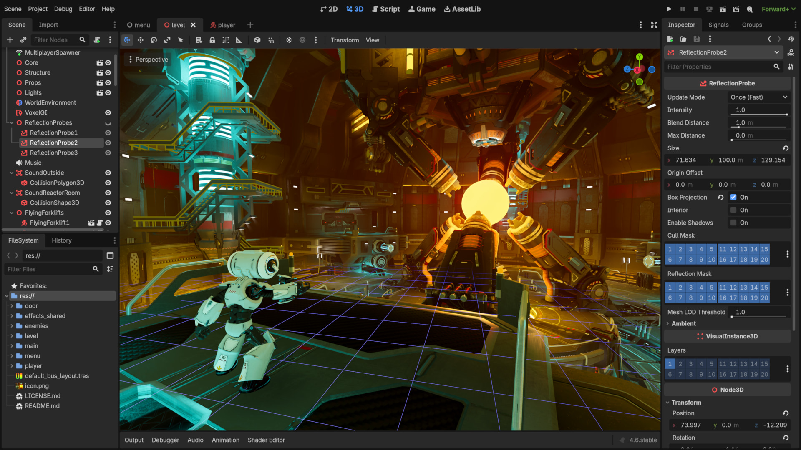

Godot es una herramienta de desarrollo de videojuegos que ha tomado bastante fuerza los ultimos anos gracias a sus actualizaciones y el hecho de que es open source y muy directo, tienes el editor y ahora puedes publicar compilar y lo que quieras con el juego, gratis. Ademas es superligero y no requiere de un buen equipo ni cuenta para usarlo.
Instrucciones de instalación. Extraelo y ejecutalo. Godot es un fichero exe que no requiere de instalacion, es la plicación completa.

Hola caracola